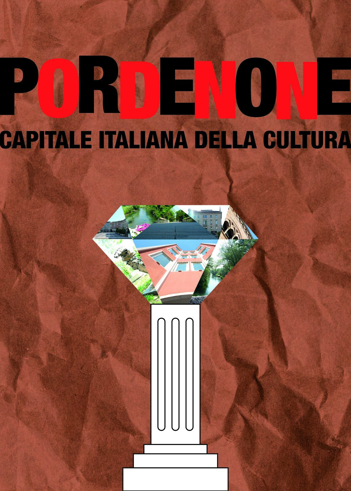
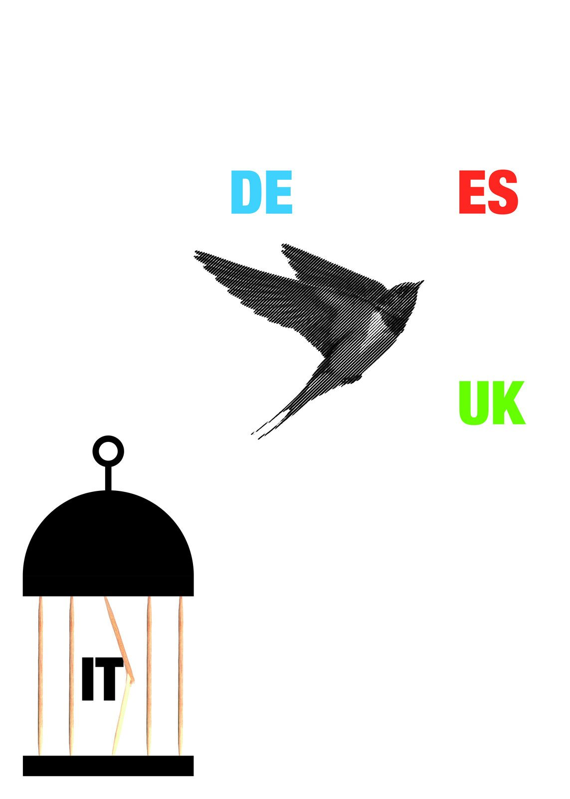

2026 · ISIA Roma · Comunicazione visiva
Tre manifesti
Tre poster su temi del territorio: Pordenone capitale italiana della cultura, i giovani che lasciano l'Italia per l'estero, e l'acqua che scorre sottoterra.


2026 · ISIA Roma · Comunicazione visiva
Tre poster su temi del territorio: Pordenone capitale italiana della cultura, i giovani che lasciano l'Italia per l'estero, e l'acqua che scorre sottoterra.

